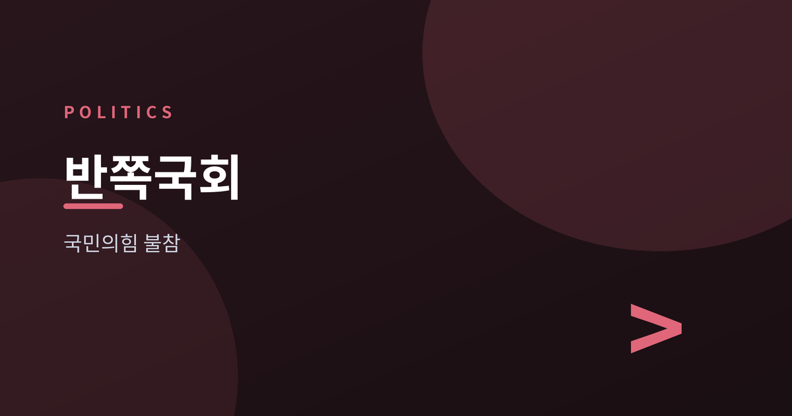
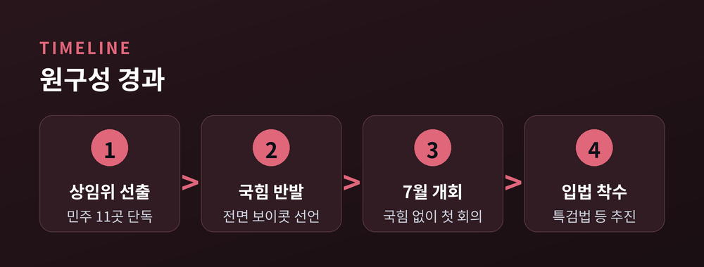
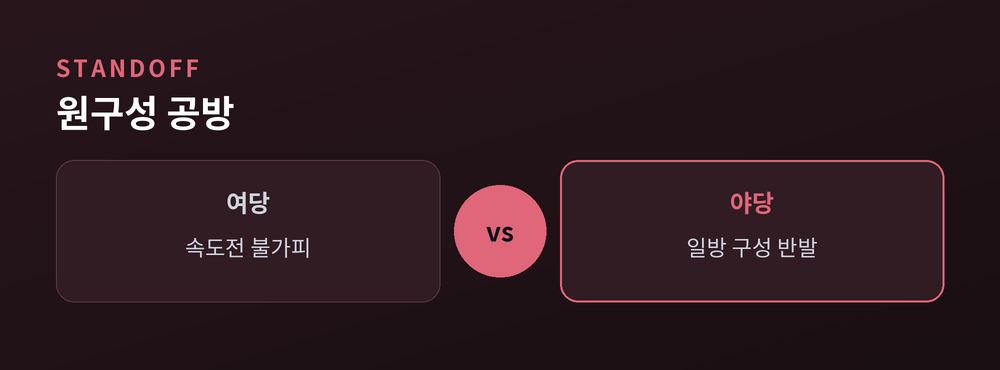
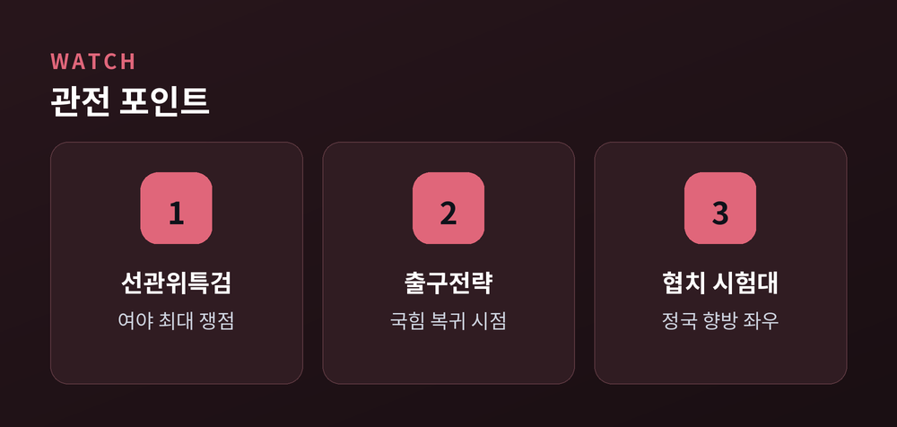
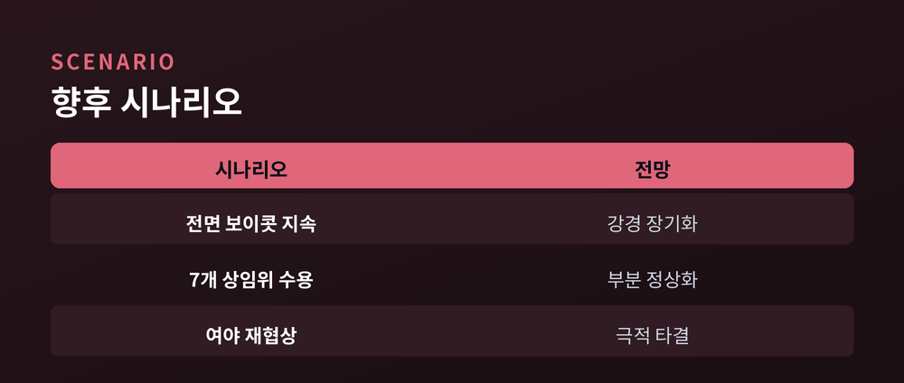

원 구성 파행, 협치는 어디로

2026년 7월, 22대 국회 후반기 임시국회가 제1야당인 국민의힘 없이 문을 열었습니다. 여당인 더불어민주당이 법제사법위원회를 포함한 상임위원회 대부분을 단독으로 구성하자, 국민의힘은 전면 불참으로 맞섰습니다. 여야 대치가 길어지면서 후반기 국회 정상화 시점은 여전히 안갯속입니다. 매 국회 초입마다 반복되어 온 원 구성 갈등이 올해도 어김없이 재현된 셈이지만, 그 파장은 예년보다 크다는 평가가 나옵니다.
더불어민주당은 지난 6월 30일 법사위원장을 포함해 예산결산특별위원회 등 상임위원장 10여 곳을 단독으로 선출했습니다. 법사위원장에는 민주당 서영교 의원이 선임됐습니다. 국민의힘은 이에 반발해 상임위원장 후보 사퇴를 선언하며 전면 보이콧에 나섰습니다. 여야는 후반기 원 구성을 두고 수 주간 물밑 협상을 벌였지만 법사위원장 자리를 둘러싼 이견을 좁히지 못했고, 결국 협상은 결렬 수순을 밟았습니다.
민주당은 소집 요구를 통해 7월 6일 7월 임시국회를 열었고, 국민의힘이 빠진 채 정무위원회, 과학기술정보방송통신위원회, 국방위원회 등 여러 상임위가 첫 회의를 열었습니다. 전체 18개 상임위원장 가운데 민주당은 11곳을 먼저 확보했고, 외교통일위원회·교육위원회·국토교통위원회 등 나머지 7곳은 국민의힘 몫으로 남겨둔 상태입니다. 다만 국민의힘은 이 배분 방식 자체를 인정하지 않고 있어, 임시국회는 사실상 여당 단독 운영 체제로 출발했습니다. 야당 몫 상임위원장 후보들도 등원을 거부하면서, 해당 상임위들은 위원장조차 없는 공백 상태로 남아 있습니다.
이런 반쪽 운영이 처음 있는 일은 아닙니다. 21대 국회에서도, 22대 국회 전반기에도 원 구성을 둘러싼 여야 대치가 반복돼 왔습니다. 다만 이번에는 국민의힘이 상임위원장 후보 전원의 사퇴서를 일괄 제출하는 등 투쟁 수위를 한층 끌어올렸다는 점에서 과거 사례와 결이 다르다는 분석도 나옵니다.
예산결산특별위원회 위원장 자리를 두고도 신경전이 이어졌습니다. 예결위는 정부 예산안 심사의 최종 관문이라는 점에서 상징성이 큰 자리로 꼽힙니다. 민주당이 예결위원장까지 가져가면서, 국민의힘은 후반기 국회 전반의 예산·법안 심사 주도권을 여당에 내줄 수 있다는 우려를 내비치고 있습니다.

이번 파행의 핵심은 법사위원장 배분입니다. 여당은 다수당이 국정 과제를 신속히 추진하려면 안정적인 원 구성이 불가피하다는 입장입니다. 반면 야당은 국회의장에 이어 법사위원장까지 여당이 가져가면 다수당의 입법 속도를 견제할 장치가 사라진다고 주장합니다.
국민의힘 정점식 원내대표는 의원총회 후 "이 상태로는 원 구성에 협조할 수 없다"며 "앞으로 더 강한 투쟁을 통해 나아갈 수밖에 없다"고 말했습니다. 그는 또 법사위원장 인선을 두고 "이재명 대통령 재판과 관련된 특검법 통과를 위한 것"이라는 의혹도 제기했습니다.
"이 상태로는 원 구성에 협조할 수 없다." — 국민의힘 정점식 원내대표
민주당은 이런 주장에 선을 그으며, 산적한 민생·개혁 입법을 더는 늦출 수 없다는 점을 강조합니다. 특히 6·3 지방선거 투표용지 부족 사태 등을 계기로 발의한 '선관위 특검법'을 7월 국회 첫 과제로 꼽고 있습니다. 다만 특검 후보 추천권을 야당에 줄지, 제3자에게 맡길지를 놓고는 여야 간 이견이 남아 있습니다.
두 진영의 시선은 원 구성 절차의 정당성을 바라보는 관점 자체에서도 갈립니다. 여당은 다수당이 원 구성을 주도하는 것이 국회법상 관행이라는 점을 내세우고, 야당은 여야 합의 없는 일방 처리가 협치의 전제를 깼다고 맞섭니다. 같은 사안을 두고 절차적 정당성의 기준이 정반대로 갈리는 셈입니다.
민생 법안을 둘러싼 시각차도 있습니다. 여당은 폐업 소상공인의 정책자금 상환 부담 완화, 도산 사업장 근로자를 위한 체불임금 국가 지급 확대 등을 시급한 과제로 제시하며 야당의 조속한 국회 복귀를 촉구하고 있습니다. 야당은 이런 법안 자체에는 반대하지 않는다면서도, 원 구성이 정상화되지 않은 상태에서 심사에 참여하는 것은 원칙에 어긋난다는 입장을 고수하고 있습니다.

원 구성 파행은 단순한 정쟁을 넘어 국회 기능 자체와 직결된 문제입니다. 상임위가 반쪽으로 운영되면 법안 심사 과정에서 다양한 의견이 충분히 반영되기 어렵고, 견제와 균형이라는 국회 본래의 역할도 흔들릴 수 있습니다. 폐업 소상공인의 정책자금 상환 부담 완화, 체불임금 국가 지급 확대 등 시급한 민생 법안 처리가 지연될 가능성도 거론됩니다.
법사위원장 자리가 유독 첨예한 쟁점이 되는 이유도 여기에 있습니다. 법사위는 다른 상임위를 통과한 법안이 본회의에 오르기 전 마지막으로 거치는 관문으로, 체계·자구 심사 권한을 쥐고 있습니다. 이 때문에 어느 정당이 법사위원장을 맡느냐에 따라 입법 속도와 견제 수위가 크게 달라질 수 있다는 점에서, 여야 모두 물러서기 어려운 자리로 여겨져 왔습니다.
동시에 이번 국면은 여야 모두에게 정치적 시험대이기도 합니다. 민주당은 이재명 정부의 국정과제와 연계된 핵심 법안 67개를 연내 처리하겠다는 목표를 세운 만큼 속도를 늦추기 어렵습니다. 국민의힘 입장에서는 강경 투쟁을 이어가자니 국정 견제 공간을 스스로 좁히는 셈이고, 물러서자니 지지층 반발이 부담입니다. 결국 이번 파행이 어떻게 마무리되는지는 후반기 국회 전체의 협치 가능성을 가늠하는 잣대가 될 전망입니다.
유권자 입장에서 바라보면 문제는 더 단순합니다. 여야가 누구 책임이냐를 다투는 사이, 정작 국민 삶과 직결된 법안 심사 일정은 뒤로 밀리고 있다는 점입니다. 상임위 파행이 길어질수록 정기국회 이전에 처리해야 할 법안이 쌓이고, 연말로 갈수록 졸속 심사 우려도 커질 수 있습니다.

정치권에서는 국민의힘의 다음 선택지로 두 가지가 거론됩니다. 하나는 2020년처럼 원 구성 자체를 전면 포기하는 방식이고, 다른 하나는 2024년 사례처럼 남은 7개 상임위원장을 부분적으로 수용하는 방식입니다. 국민의힘 내부에서도 "버틴다고 하더라도 8월까지 끌기는 현실적으로 어렵지 않겠나"는 신중론이 나오는 것으로 전해집니다. 반대로 지도부 강경파는 법사위원장 재배분 없이는 어떤 협상도 받아들일 수 없다는 원칙론을 굽히지 않고 있어, 당내 기류도 완전히 하나로 모이지는 않은 모습입니다.
다만 아직은 강경 기류가 우세해 보입니다. 여당은 남은 상임위 배분과 민생 법안 처리를 동시에 밀어붙이겠다는 방침이고, 야당은 뚜렷한 출구전략을 정하지 못한 채 장외 여론전에 무게를 두는 모습입니다. 선관위 특검법 처리 시점과 방식이 이번 대치의 향방을 가를 분수령이 될 것으로 보입니다.
여론의 시선도 변수입니다. 여당의 입법 드라이브가 '독주'로 비칠지 '국정 정상화'로 받아들여질지, 야당의 보이콧이 '견제'로 평가받을지 '발목잡기'로 비칠지에 따라 양측의 협상 전략도 달라질 수 있습니다. 8월 정기국회 준비 일정이 다가오는 만큼, 여야 모두 명분과 실리를 저울질하는 시간이 길지는 않아 보입니다.
7월 임시국회가 언제, 어떤 모습으로 정상화될지는 아직 단정하기 이릅니다. 여야가 접점을 찾을지, 아니면 파행이 더 길어질지는 앞으로의 협상 테이블에 달려 있습니다.

참고 소스